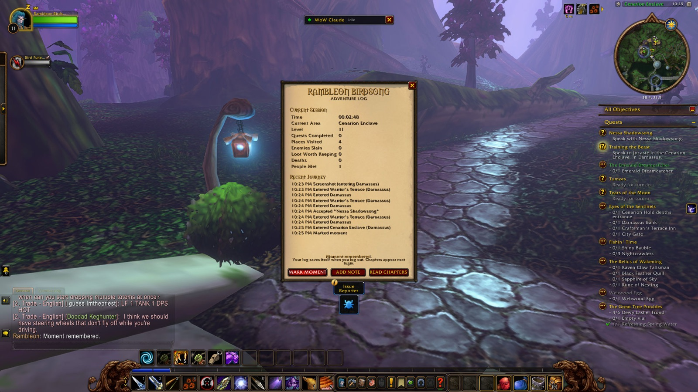
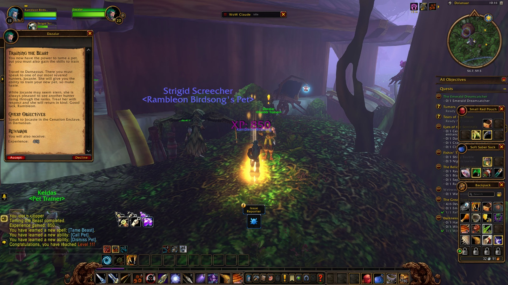
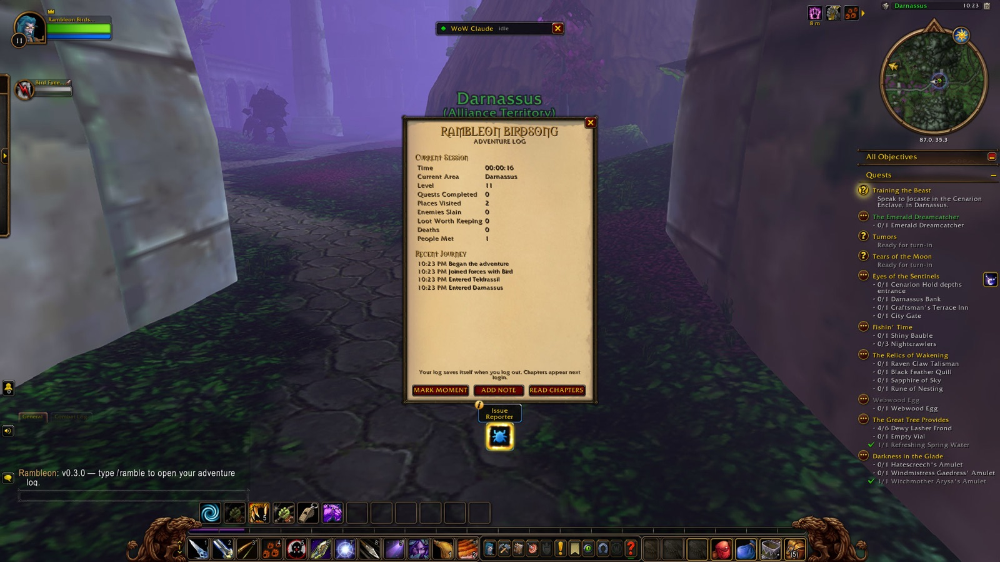

Rambleon found Bird waiting near Dolanaar before nine, and the two of them fell in together the way old traveling companions do, without much ceremony. They spent the next hour and more working the paths and glades between Wellspring Lake and the Oracle Glade, thinning out webwood spiders and timberlings and the strange, agitated dryads of the Bloodfeather aviary. Witchmother Arysa fell to them in the glade, her amulet a small, hard-won thing tucked away after. It was steady work, the kind that asked more of patience than of glory, and by the time they turned back toward Dolanaar the two had been at each other's side for the better part of two hours.
Back in the village Rambleon picked up the makings of a hunter's more settled life — Zarrin taught him the beginnings of cooking over a proper fire, and he found himself gathering spider legs and shimmering fronds for Denalan and the others who kept Teldrassil's small errands moving. Taming the Beast asked to be learned twice more before the lesson held, an old frustration turned mild by then, more habit than sting. Around Lake Al'Ameth he thinned the Gnarlpine camps and the last of the nightsabers, and it was there, near the water, that the eleventh level found him — not with fanfare, just a familiar warmth settling into his limbs, worth pausing to mark with a picture before moving on.
Training the Beast finished not long after, and then Bird was beside him again for the walk into Darnassus. The city opened around them the way it always did, terraced and unhurried, and Rambleon let himself slow down in it. He picked up word from Nessa Shadowsong, saw the tumors dealt with, and stood in the Temple of the Moon long enough to see Tears of the Moon through to its end before taking up Sathrah's Sacrifice in its place. In the Cenarion Enclave he stopped long enough to mark the moment properly — a picture, and a thought he wanted to keep. He wrote it down plainly: he really liked Darnassus. Calm. Never overcrowded. It was true standing there, and it stayed true through the last hour, wandering between the Craftsmen's and Tradesmen's terraces on small errands that mattered less than the walking itself.
He and Bird parted ways somewhere in that unhurried circuit, the night winding down not with an ending but simply a last, easy lap through streets that asked nothing of him.

